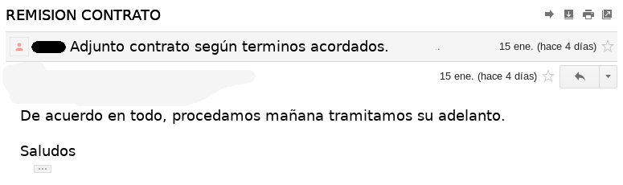

Tips and Tricks sobre Contratos para Freelancers
William Moreno Reyes
william.moreno.reyes@gmail.com
git clone https://github.com/williamjmorenor/contratos_freelance.git

Lo que todos deben saber sobre contratos.
Concepto General.
- Acuerdo entre formal entre las partes.
- Crea derechos y obligaciones entre las partes.
Base Legal
Arto. 1836. Código Civil - Las obligaciones que nacen de los contratos, tienen fuerza de ley entre las partes contratantes, y deben cumplirse al tenor de los mismos.
Ventajas de un contrato.
- Estable limites en los trabajos a realizar.
- Establece un honorario formal por los servicios a prestar.
- En caso de incumplimiento del contrato se puede llevar a instancias judiciales.
- Crea derechos reales.
- Es una muestra de formalidad ante el cliente.
Elementos básicos de un contrato.
- Identificación de las partes.
- Objeto del contrato.
- Honorarios y forma de pago.
- Aceptación.
Sirve de soporte fiscal para el cliente.
Una factura no es soporte suficiente de un gasto.
Base legal.
Art. 100 Reglamento LCT.
Art. 39 Primer párrafo LCT
Art. 42 LCT
Riesgos de no firmar un contrato.
- No hay una forma de pago definida.
- No hay una correcta delimitación del alcance de los trabajos a realizar.
- No se establecen plazos de pago.
- No es posible anular un contrato que no existe.
8 Clausulas tips a tomar en cuenta.
1. Definición clara de honorarios.
- Tarifa y forma de calculo (se cobra por hora o proyecto).
- Si se cobra por hora establecer un mínimo y máximo para el proyecto.
- Por regla general el cliente va a negociar los honorarios.

2. Forma y medios de pagos.
- Asegurar un adelanto suficiente.
- Definir pagos subsecuentes según se avanza en el proyecto.
- Como recibir el pago (cheque, transferencia, efectivo).

3. Establecer una contraparte en el cliente.
- Definir un sólo punto de contacto.
- Establecer quienes son los funcionarios autorizados a influir en el desarrollo del proyecto.
- Establecer medios de comunicación.
4. Cancelación anticipada.
- Establecer una clausula de indemnización en caso que el cliente de por terminado el proyecto.
- Definir un medio de solucionar discrepancias.
5. Revisiones y Modificaciones al proyecto.
- Establecer requerimientos claros desde el inicio.
- Limitar cantidad de revisiones al proyecto.
- Establecer un precio por revisiones adicionales.
6. Imprevistos y requerimientos adicionales.
- Establecer honorarios por requerimientos adicionales.
- Firmar una ampliación al contrato por requerimientos adicionales.

7. Derechos de autor.
- Asegurar que el cliente no esta autorizado a hacer uso comercial del proyecto si no ha pagado por el mismo.
8. Plazos de entrega.
- Establecer un cronograma para el proyecto.
- Tratar de evitar atrasos en las entregas previstas.

Tricks sobre contratos.
El cliente no firmo el contrato.
La aceptación por medio digital es igual medio de prueba para exigir cumplimiento de terminos
Base Legal
Art. 276 - Código procesal civil: Los documentos privados harán prueba en el proceso civil, [...] Cuando se solicite la eficacia de un documento electrónico o se impugne su autenticidad, se procederá con arreglo a lo previsto en este Código y otras leyes.
Cuidado con la representación legal.
Sólo un funcionario con representación legal puede obligar a una empresa en un contrato.
- Normalmente el gerente general cuenta con poder general de administración.
- Procurar que el gerente general sea nuestra contraparte en el contrato.
El cliente no quiere pagar.
Normalmente un requerimiento de cobro judicial basta, los honorarios de un abogado por recuperación suelen ser entre 5% y 10% por recuperación de cartera.
No existe carcel por deuda, pero contratar servicios y no cancelarlos puede catalogarse como estafa que es un delito.
¿Si doy factura siempre debo hacer un contrato.?
- Las facturas son soporte para el traslado de IVA y formalización de cobro.
- Contratos y facturas son complementarios pero uno no suple al otro.
- Servicios menores son al excepción a la regla.